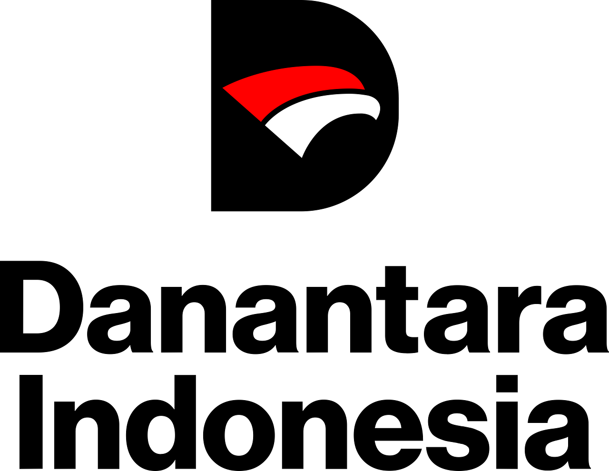

Didukung Penuh Oleh


KUMARA tidak berjalan sendiri. Kami membangun ekosistem yang melibatkan Akademisi, Pemerintah Desa, dan Industri untuk menjamin keberlanjutan program.
Memberikan legalitas program, menyediakan ruang untuk pelatihan di Balai Desa, dan memfasilitasi koordinasi dengan tokoh masyarakat setempat.
Bertanggung jawab atas pengembangan teknologi aplikasi, penyusunan modul kurikulum, dan pelaksanaan pelatihan (Training of Trainers).
Memberikan pendanaan implementasi (Social Project Funding), mentoring ahli, dan dukungan infrastruktur jaringan jika diperlukan.

Agar manfaat KUMARA terus dirasakan setelah periode Innovillage selesai, kami telah merancang skema serah terima operasional:
Melatih 3-5 ibu muda di desa sebagai "Admin Lokal" yang mampu mengatasi masalah teknis dasar aplikasi.
Aplikasi KUMARA akan dijadikan aset digital BUMDes untuk memonitor potensi pajak/retribusi desa di masa depan.
Pembentukan grup WhatsApp "KUMARA Community" yang aktif saling berbagi tips bisnis tanpa ketergantungan penuh pada mahasiswa.